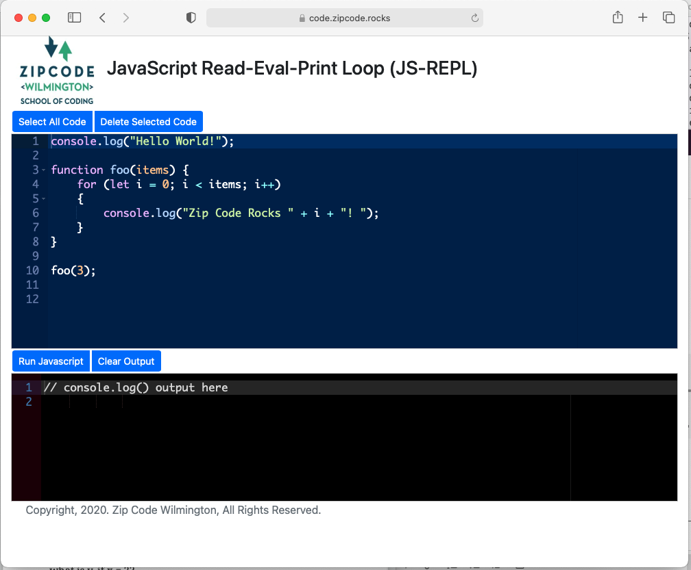
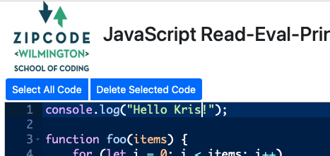
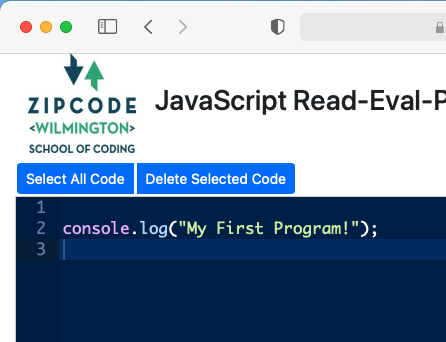
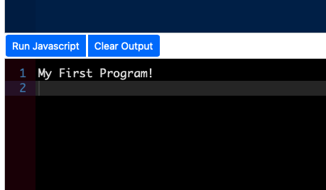

A REPL is a special kind of program. It allows you to type in a Javascript program, run it, and see what happens. Even though it is simple and easy to use, it is a pretty powerful computer programming tool.
REPL is an acronym meaning Read, Evaluate, and Print Loop.
The one we've created for your use, https://code.zipcode.rocks, let you type in various JavaScript programs and run them showing you the results.
Let's try the sample on that is built-in to the REPL page. Use a browser to go to the URL https://code.zipcode.rocks. You should see something like:
Take a look at the black section. What does it say?
Notice the two sections of blue buttons, click the one that says Run Javascript. (It's in the middle of the page). Now, what does the black section say?
That is how you run JavaScript in this REPL.
Now, what does REPL stand for? Well, it means "Read Evaluate Print Loop" (R-E-P-L). A REPL is a program that reads in your code (here it is JavaScript), evaluates what it means, and then prints out any output the program might have. Here, we are using the command console.log() to print out a series of output values.
In the REPL window, the blue part, you can change the JavaScript code. It works like a text editor or a word processor.
Change Line 1 in the blue section from "Hello World" to "Hello YourName" (see, I've changed World to Kris) (and use your real name there, not YourName).
Now click the blue Run Javascript button, what did the black section change to??
Pretty cool, huh?
Notice that the source code is several colors. This is because many code editing programs today, like our REPL here, use different colors to point out different parts of the JavaScript program. Here, numbers are in orange, Strings are in green, and special JavaScript reserved words are in a pinkish color. This syntax coloring is used to indicate extra information to the coder.
Let's write your first program. First, click the Select All Code blue button. Second, click the Delete Selected Code blue button. This empties the blue editor of all the code that was there.
Now, type onto line 1,
console.log("My First Program!");
Take care to notice the double quotes (") AND notice the semicolon (;) at the end of the line.
And now click the Run Javascript blue button. What does the black output section say now?
Does it look like this?
Congratulations! You've just written a Javascript program.
Maybe you are Zip Code material after all.
To attend a Zip Code Wilmington cohort, Zip Code asks you to complete a JavaScript coding assessment. Usually, this is done on a website like HackerRank. By asking you to solve some pretty simple programming challenges, we get a chance to see how you do when learning something entirely new. The ability to learn new and different things continually is a very important aspect of building a professional career as a coder. As you will see, if you do make coding a professional endeavor, learning is something you will do all the time.
Now, if you'd like to try a few problems, before you go off to HackerRank to practice before you take the ZipCode Assessment, see these learning trails below. They'll give a feel for what solving these kinds of problems are like.
The basic idea is to read the comments (the green text) and then change the code in the editor. Clicking the blue Run JavaScript button will test your code. If you see "Success" in the black output section, you've done the problem correctly and should go to the Next Coding Challenge.
If you get an error, the editor usually tells you what you got wrong. You can edit the code and try again by clicking the blue Run Javascript button. If you get completely frustrated, you can Skip Coding Challenge and go on to another question.
At the end of the trail, you'll see your final score. Good Luck!